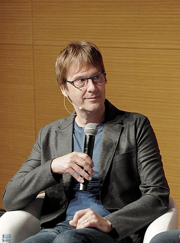
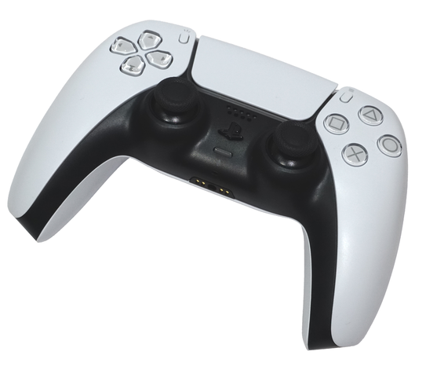

The lead architect of the PlayStation console line, Mark Cerny, implemented a two-year feedback cycle
after the launch of the PlayStation 4. This entailed regularly visiting Sony's first-party
developers at two-year intervals to find out what concerns they had with shortcomings in Sony's
current hardware and how such hardware could be improved in console refreshes or for the next
generation. This feedback was fed into the priorities for the console development team. In the
development of the PlayStation 5, a key issue was the length of loading times for games.Cerny said
several developers, including Epic Games' Tim Sweeney, told him that standard I/O speed of hard disk
drives was now a limiting factor in pushing game development.Slow data rates placed limits on the
size of data being loaded into the game, the physical location of data on the storage medium, and
the duplication of data across the medium in order to reduce load times. An important goal was to
find ways to reduce loading time, particularly in games that stream or dynamically load new game
areas as the player moves through the game world.
Jim Ryan, the CEO of Sony Interactive Entertainment, stated that Sony had researched the feasibility
of a "low priced, reduced spec" version of the PlayStation 5, like what Microsoft had done with its
Xbox Series X and its lower-power counterpart the Xbox Series S; and concluded that they believed
such consoles do not fare well, becoming obsolete too fast.

Mark Cerny, the PlayStation 5's chief architect
Cerny first publicly described the new console in an interview with Wired magazine in April 2019.In
early 2019, Sony's financial report for the quarter ending March 31, 2019, affirmed that new
next-generation hardware was in development but would ship no earlier than April 2020.In a second
Wired magazine interview in October 2019, Sony said it intended to ship its next-generation console
worldwide by the end of 2020.The current hardware specifications were revealed in October 2019.At
CES 2020, Sony unveiled the official logo for the platform, which follows the similar minimalist
styling of the previous PlayStation consoles and brand.Full specifications were given in an online
presentation by Cerny and published by Sony and Digital Foundry on March 18, 2020.Digital Foundry
spoke with Cerny in detail and published a "deep dive" on April 2.
The PlayStation 5 is powered by a custom system on a chip (SoC) designed in tandem by AMD and
Sony,integrating a custom 7 nm AMD Zen 2 CPU with eight cores running at a variable frequency capped at
3.5 GHz.The integrated GPU is also a custom unit based on AMD's RDNA 2 graphics architecture.The GPU has
36 compute units running at a variable frequency capped at 2.23 GHz, making it capable of a peak
theoretical performance of 10 teraFLOPS.The GPU supports hardware-accelerated real-time ray tracing, a
rendering technique that allows for realistic lighting and reflections.The console has 16 GB of GDDR6
SDRAM with a peak bandwidth of 448 GB/s,and integrates Bluetooth 5.1, and 802.11ax (Wi-Fi 6).
- CPU: Custom 8-core AMD Zen 2
Variable frequency up to 3.5 GHz
- Graphics: Custom AMD RDNA 2
36 CUs
Variable frequency up to 2.23 GHz
10.3 TFLOPS peak
- Sound: Custom Tempest Engine 3D Audio
Dolby Atmos & DTS:X (Blu-ray video & UHD Blu-ray video)
7.1 surround sound
- Connectivity:
- Wi-Fi IEEE 802.11ax
- Bluetooth 5.1
- Gigabit Ethernet
- 2× USB 3.2 Gen 2×1
- 1× USB 2.0
- 1× USB-C with USB 3.2 Gen 2×1
- 1× HDMI 2.1
- Memory: 16 GB/256-bit GDDR6 SDRAM
512 MB DDR4 RAM (for background tasks)
The internal storage of the PlayStation 5 is a custom-built 825 GB solid-state drive (667 GB available) with a 12-channel interface, achieving a raw throughput of 5.5 GB/s. This atypical drive size was found to be optimal for the 12-channel pathway rather than a more common 512 GB or 1 TB unit. With a dedicated decompression unit supporting zlib and the new Oodle Kraken protocol from RAD Game Tools, the unit has a typical throughput of 8–9 GB/s. Mark Cerny stated that a fast SSD was the top request from game developers so the goal not only was to have a theoretical raw read speed 100 times faster than PS4, but to eliminate input/output (I/O) bottleneck points so the performance target could be made effective. To this end, Sony designed a custom chip with multiple coprocessors to work in unison with the flash memory controller to reduce latency and channel data more efficiently around the system. At peak, the custom unit is capable of processing up to 22 GB/s of compressible data.
Storage for games is expandable through an NVM Express (NVMe) M.2 port for solid-state storage and USB hard drives, however at launch, NVMe drives were not supported and the console will not boot if one is installed. Beta system software support for the M.2 port was released in July 2021, while full support was added in a September 2021 system update. The internal SSD is not user-serviceable, since its flash memory chips and controller are built into the PlayStation 5's motherboard. Though game installation is mandatory, the user has some control of what to install such as only installing the multiplayer component of a game. While PlayStation 4 games can be moved between the internal SSD drive and an external drive to free up space on the SSD, PlayStation 5 games must be stored on the internal SSD to be played, and at launch could not be moved to an external storage device. An April 2021 system patch enabled users to move PlayStation 5 games to and from an external USB storage device, though the games must still reside on the internal SSD to be played.
The base version of the PlayStation 5 includes an Ultra HD Blu-ray optical drive compatible with Ultra HD Blu-ray discs, standard Blu-ray discs and DVDs. The PlayStation 5 does not support CDs and will not play 3D Blu-ray content. The choice of Ultra-HD Blu-ray as the disc medium means PlayStation 5 game discs can hold up to 100 GB of data, in contrast to PlayStation 4 games which usually came on dual-layer standard Blu-ray discs capable of holding up to 50 GB.
The console's form factor was revealed during the June 11, 2020 presentation. Sony President Jim Ryan stated that the aesthetics are intended to be "transformational in how they look, sound, and feel". The launch unit is a two-tone design matching the design of the DualSense controller, with a black internal block flanked by two white wings along its sides, each lit by blue LEDs. Ryan stated that more colors than white and black may be available after launch. The unit can operate vertically or horizontally. Two long air intake vents run along the front, and heat exhaust vents dominate the rear. The wings are removable to access certain internal components such as the PCIe 4.0 NVMe SSD storage expansion slot, the power supply, and the optional Blu-ray disc drive. Beneath the side panels are two "dust catchers" – holes allowing the user to vacuum out dust collected by the cooling system. Senior Art Director Yujin Morisawa led the console's case design, inspired by the term "five dimensions" and crafting the skeleton of its design around circles and squares that would make players comfortable when looking at it. Morisawa also had to manage the case shape to provide enough internal volume within the unit for all the technical hardware while reducing its size without restricting air flow.
The DualSense wireless controller for the PlayStation 5 was revealed on April 7, 2020. It is based on the prior DualShock controller but with modifications influenced by discussions with game designers and players. The DualSense controller has adaptive triggers with haptic feedback through voice coil actuators that can change the resistance to the player as necessary, supporting experiences such as virtually drawing an arrow from a bow. The DualSense maintains the same buttons as the DualShock 4, though the "Share" button was renamed to "Create" with additional means for players to create and share content. A new built-in microphone array was added so players can speak to others using only the controller, and the included controller speaker has been improved. It has two-tone coloring, primarily white with black facing, with the black piece being easily detachable. The light bar has been moved to the sides of the touchpad. It has USB-C connectivity, a higher-rated battery, and an audio jack. As an Easter egg, the texture of the controller unit is covered in miniature versions of the four PlayStation button symbols (cross, circle, square, and triangle).

Connectivity: USB-C, Bluetooth 5.1, 3.5 mm TRRS (OMTP) stereo headset jack
Power: 3.65 V 1560 mAh Li-ion battery (non-removable)
Dimensions: 160 mm × 66 mm × 106 mm (6.3 in × 2.6 in × 4.2 in)
Mass: 280 g (9.88 oz)
Accessories include a charging station for the DualSense, a new HD camera, and a media remote control. The Pulse 3D wireless headset is integrated with the PS5's Tempest Engine 3D audio technology.
The PS5 is backward compatible with most existing PS4 controllers and accessories for PS4 games only – some with limited functionality. Rock Band peripherals are supported since Rock Band 2. PS5 games can use the existing PlayStation Move, PlayStation Camera, PlayStation VR Aim Controller, officially licensed headsets, and specialty controllers with official licenses like flight sticks and racing wheels. Sony announced the PlayStation VR2 system built for the PlayStation 5 in January 2022.
Sony began shipping a minor hardware revision of the PlayStation 5 in August 2021. The new design reduced the size and weight of the heat sink, reducing the net system weight by 300 grams (0.66 lb), without having a noticeable affect on cooling performance, according to Digital Foundry and Gamers Nexus. This change also replaced the screw for the console stand to be screwable without the use of a screw driver.
The PlayStation 5's redesigned user interface is characterized by Sony as "accessible and informative", providing real-time updates of friends' activities, available multiplayer activities, and single-player missions and rewards. Cerny stated "we don't want the player to have to boot the game, see what's up, boot the game, see what's up", so all of these options are "visible in the UI". Matt MacLaurin, the current vice president of UX design at PlayStation, described the redesigned user interface as a "very interesting evolution of the OS", and a "100 percent overhaul of the PS4 UI and some very different new concepts". MacLaurin stated that the UI is extremely fast with a new and robust visual language.
Each PlayStation 5 console comes pre-installed with Astro's Playroom, a game designed to serve as a demonstration of the DualSense controller. Games are not region-locked, so games purchased in one region can be played on consoles in all regions.
According to Hideaki Nishino, Sony's senior vice president of Platform Planning and Management, the PS5 is designed to be backward compatible with more than "99 percent" of PS4's 4,000+ game library, playable from launch day. The console is compatible with PlayStation VR. Because of PS5's high-speed SSD and increased processing power, many PS4 games gain from improved loading times or gameplay speeds "so that they can benefit from higher or more stable frame rates and potentially higher resolutions". Players can synchronize their saved game files through cloud storage or transfer them using a USB storage device so no progress is lost. Backward compatibility is enabled in part by the similarity of hardware architecture, such as "extra logic" in the RDNA 2 GPU that ensures compatibility with PS4's GCN-based GPU. Mark Cerny explained during a March 2020 presentation and later in an interview with Digital Foundry how CPU clock timing required particular attention; though the Zen 2 CPU has an instruction set to handle the PS4's Jaguar CPU, their timings can be very different, so Sony worked closely with AMD when developing the Zen 2 CPU to more closely match the Jaguar's timings. PS5 backward compatibility may exhibit errors with some PS4 games, and does not include previous generations. However, some older PlayStation console games are available through the PlayStation Now game streaming service which is available for the PlayStation 5. The PlayStation 4's Share menu cannot be displayed but the PS5's Create menu can be used to capture screenshots or video.
The PlayStation 5 was generally well received at launch, with much praise of its DualSense controller's improved haptic feedback and adaptive triggers. Astro's Playroom, which comes pre-installed on every PS5 and is designed to demonstrate the controller's features, was praised with Laptop Mag calling it "deceptively cute". The exclusive line-up, including Spider-Man: Miles Morales and Demon's Souls, was heavily praised although some reviewers, such as TechRadar, said there should have been more launch games. The console's user interface was generally praised for being fast and easy to navigate.
The PlayStation 5, as with the Xbox Series X/S, was in limited supply immediately upon launch, and through 2021 due to a global semiconductor shortage, combined with increased demand for video game consoles due to the COVID–19 pandemic. Sony expects supply to continue to be limited until at least 2022. Scalpers took advantage of the shortage, attempting to sell the console for thousands of dollars. Sony expanded its PlayStation Direct program to sell consoles directly to consumers within Europe in November 2021 as to bypass scalpers.